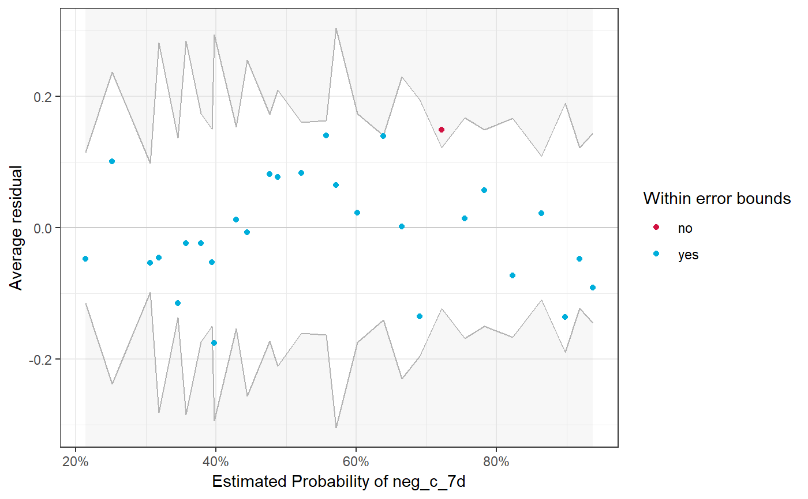
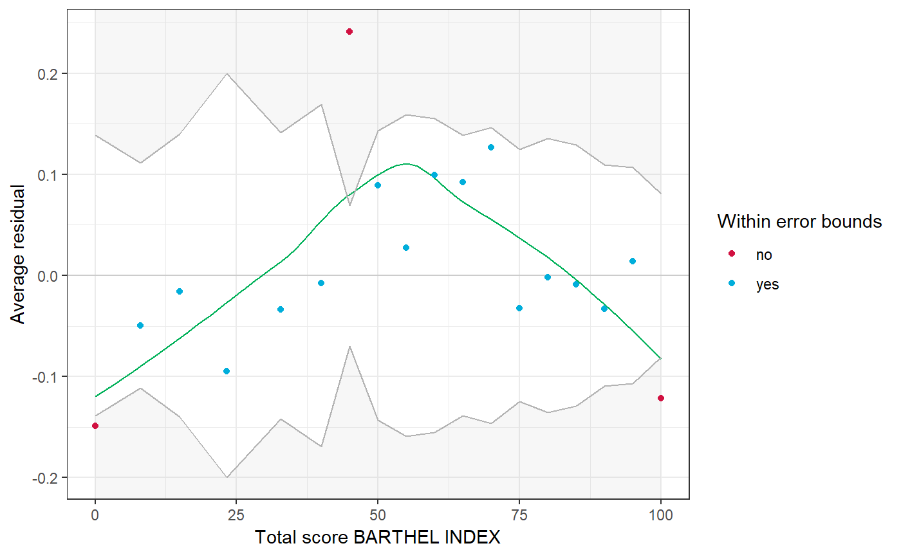

Compute various measures or tests to assess the model quality, like root mean squared error, residual standard error or mean square error of fitted linear (mixed effects) models. For logistic regression models, or mixed models with binary outcome, the error rate, binned residuals, Chi-square goodness-of-fit-test or the Hosmer-Lemeshow Goodness-of-fit-test can be performed.
cv(x, ...) chisq_gof(x, prob = NULL, weights = NULL) hoslem_gof(x, n.bins = 10) rmse(x, normalized = FALSE) rse(x) mse(x) error_rate(x) binned_resid(x, term = NULL, n.bins = NULL)
| x | Fitted linear model of class |
|---|---|
| ... | More fitted model objects, to compute multiple coefficients of variation at once. |
| prob | Vector of probabilities (indicating the population probabilities)
of the same length as |
| weights | Vector with weights, used to weight |
| n.bins | Numeric, the number of bins to divide the data. For
|
| normalized | Logical, use |
| term | Name of independent variable from |
rmse(), rse(), mse(), cv()These functions return a number, the requested statistic.
error_rate()A list with four values: the error rate of the full and the null model, as well as the chi-squared and p-value from the Likelihood-Ratio-Test between the full and null model.
binned_resid()A data frame representing the data that is mapped to the plot, which is automatically plotted. In case all residuals are inside the error bounds, points are black. If some of the residuals are outside the error bounds (indicates by the grey-shaded area), blue points indicate residuals that are OK, while red points indicate model under- or overfitting for the related range of estimated probabilities.
chisq_gof()For vectors, returns the object of the computed chisq.test.
For glm-objects, an object of class chisq_gof with
following values: p.value, the p-value for the goodness-of-fit test;
z.score, the standardized z-score for the goodness-of-fit test;
rss, the residual sums of squares term and chisq, the pearson
chi-squared statistic.
hoslem_gof()An object of class hoslem_test with following values: chisq,
the Hosmer-Lemeshow chi-squared statistic; df, degrees of freedom
and p.value the p-value for the goodness-of-fit test.
The RMSE is the square root of the variance of the residuals and indicates
the absolute fit of the model to the data (difference between observed data
to model's predicted values). “RMSE can be interpreted as the standard
deviation of the unexplained variance, and has the useful property
of being in the same units as the response variable. Lower values
of RMSE indicate better fit. RMSE is a good measure of how accurately
the model predicts the response, and is the most important criterion
for fit if the main purpose of the model is prediction.”
(Grace-Martin K: Assessing the Fit of Regression Models)
The normalized RMSE is the proportion of the RMSE related to the
range of the response variable. Hence, lower values indicate
less residual variance.
The residual standard error is the square root of the residual sum of squares divided by the residual degrees of freedom.
The mean square error is the mean of the sum of squared residuals, i.e. it measures the average of the squares of the errors. Lower values (closer to zero) indicate better fit.
The advantage of the cv is that it is unitless. This allows
coefficient of variation to be compared to each other in ways
that other measures, like standard deviations or root mean
squared residuals, cannot be.
“It is interesting to note the differences between a model's CV
and R-squared values. Both are unitless measures that are indicative
of model fit, but they define model fit in two different ways: CV
evaluates the relative closeness of the predictions to the actual
values while R-squared evaluates how much of the variability in the
actual values is explained by the model.”
(source: UCLA-FAQ)
The error rate is a crude measure for model fit for logistic regression
models. It is defined as the proportion of cases for which the
deterministic prediction is wrong, i.e. the proportion where the the
predicted probability is above 0.5, although y = 0 (and vice versa).
In general, the error rate should be below 0.5 (i.e. 50%), the
closer to zero, the better. Furthermore, the error rate of the full
model should be considerably below the null model's error rate
(cf. Gelman and Hill 2007, pp. 99). The print()-method also
prints the results from the Likelihood-Ratio-Test, comparing the full
to the null model.
Binned residual plots are achieved by “dividing the data into
categories (bins) based on their fitted values, and then plotting
the average residual versus the average fitted value for each bin.”
(Gelman, Hill 2007: 97). If the model were true, one would
expect about 95% of the residuals to fall inside the error bounds.
If term is not NULL, one can compare the residuals in
relation to a specific model predictor. This may be helpful to check
if a term would fit better when transformed, e.g. a rising and falling
pattern of residuals along the x-axis (the pattern is indicated by
a green line) is a signal to consider taking the logarithm of the
predictor (cf. Gelman and Hill 2007, pp. 97ff).
For vectors, this function is a convenient function for the
chisq.test(), performing goodness-of-fit test. For
glm-objects, this function performs a goodness-of-fit test.
A well-fitting model shows no significant difference between the
model and the observed data, i.e. the reported p-values should be
greater than 0.05.
A well-fitting model shows no significant difference between the model and the observed data, i.e. the reported p-value should be greater than 0.05.
Gelman A, Hill J (2007) Data Analysis Using Regression and Multilevel/Hierarchical Models. Cambridge, New York: Cambridge University Press
Everitt, Brian (1998). The Cambridge Dictionary of Statistics. Cambridge, UK New York: Cambridge University Press
Hosmer, D. W., & Lemeshow, S. (2000). Applied Logistic Regression. Hoboken, NJ, USA: John Wiley & Sons, Inc. doi: 10.1002/0471722146
Grace-Martin K: Assessing the Fit of Regression Models
r2 for R-squared or pseudo-R-squared values.
data(efc) fit <- lm(barthtot ~ c160age + c12hour, data = efc) rmse(fit)#> [1] 25.46792rse(fit)#> [1] 25.51134cv(fit)#> [1] 0.3948098#> [1] 23.43806mse(fit)#> [1] 549.3425cv(fit)#> [1] 0.07851737# normalized RMSE library(nlme) fit <- lme(distance ~ age, data = Orthodont) rmse(fit, normalized = TRUE)#> [1] 0.07242178#coefficient of variation for variable cv(efc$e17age)#> [1] 0.1023027# Error Rate efc$neg_c_7d <- ifelse(efc$neg_c_7 < median(efc$neg_c_7, na.rm = TRUE), 0, 1) m <- glm( neg_c_7d ~ c161sex + barthtot + c172code, data = efc, family = binomial(link = "logit") ) error_rate(m)#> #> # Error Rate of Logistic Regression Model #> #> Full model: 29.45% #> Null model: 45.15% #> #> # Likelihood-Ratio-Test #> #> Chi-squared: 166.050 #> p-value: 0.000 #># Binned residuals binned_resid(m)binned_resid(m, "barthtot")# goodness-of-fit test for logistic regression chisq_gof(m)#> #> # Chi-squared Goodness-of-Fit Test #> #> Chi-squared: 852.765 #> z-score: 1.025 #> p-value: 0.305 #>#># goodness-of-fit test for logistic regression hoslem_gof(m)#> #> # Hosmer-Lemeshow Goodness-of-Fit Test #> #> Chi-squared: 18.707 #> df: 8 #> p-value: 0.017 #>#># goodness-of-fit test for vectors against probabilities # differing from population chisq_gof(efc$e42dep, c(0.3,0.2,0.22,0.28))#> #> Chi-squared test for given probabilities #> #> data: dummy #> X-squared = 234.76, df = 3, p-value < 2.2e-16 #># equal to population chisq_gof(efc$e42dep, prop.table(table(efc$e42dep)))#> #> Chi-squared test for given probabilities #> #> data: dummy #> X-squared = 0, df = 3, p-value = 1 #>